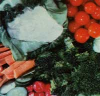
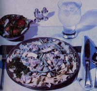
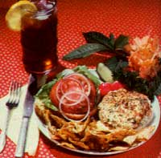
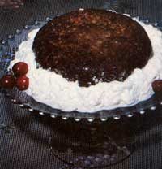
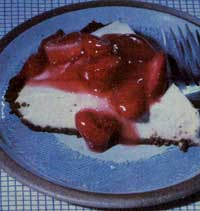

Cooking With Tofu
Tofu has been used eastern Asia. It is a rich food source. Recipes include tofu-garlic dip, tofu stroganoff, baba burgers, tofu pancakes, tofu-walnut torte, and maple-tofu cheesecake.
By Bonnie Mandoe
September/October 1980
Back in issues 3-5, MOTHER ran a series of excerpts from The Book of Tofu by William hurtleff and Akiko Aoyagi . . . introducing an Oriental food product that could help solve the earth's protein crisis. Since the time those articles appeared, you've probably gotten better acquainted with the amazing soybean card . . . and-if so-you'll definitely want to try these delicious tofu recipes!
Here on the Hawaiian island of Maui, a person can walk into any grocery store and discover items that resemble individual blocks of light cheese floating in little tubs of water. The strange food is tofu, an inexpensive, high-quality protein source that's been used in the cuisine of eastern Asia for thousands of years. The nutritious substance-which still forms a major part of the diets of most people in Taiwan and Japan-is produced by heating soymilk and pressing the resulting curds to form firm blocks.
Although the soy "cheese" is an amazingly rich food source, tofu is still all but unknown in many areas of the United States, where-ironically enough-two-thirds of the world's soybeans are grown. The product of the leguminous plant contains several essential amino acids not found in many grain products . . . and it's low in calories and saturated fats (so it's easy to digest), rich in vitamins and minerals, and totally free of cholesterol. What's more, the wholesome food is extremely low in cost when compared to other sources (chiefly animal products) of protein.
Tofu-which has a very mild flavor-combines equally well with fruits, vegetables, grains, and dairy products . . . and you can also use it in place of beef in those traditional meat-centered recipes you don't want to give up! Don't make the mistake of thinking that tofu is nothing more than a meat substitute, though. In fact, its bland taste is considered a virtue by most natural foods cooks, since the versatile curd brings out the subtle flavors of a whole range of other ingredients in casseroles and stir-fry dishes anal desserts . . . while providing a hearty, protein-packed basis for the meal.
You can either make your own tofu at home (consult MOTHER NO. 41, page 40 for complete directions), or you can buy it-in cakes that weigh 10, 12, or 20 ounces-at your local health food store or supermarket. You'll usually find the Oriental delicacy immersed in water and packed in a small plastic container. Take it home, and be sure to refrigerate the cake to preserve its freshness.
Tofu will keep for 7 to 10 days in its unopened package, although the soy product does tend to lose some of its original flavor and natural sweetness as it ages. If you plan to use the curd within a few hours, slit open the carton and drain off all the water. Then remove the block, finish draining it, and place it in a new container, with fresh water, until you're ready to start cooking.
Either way, remember to drain the cake in a colander about half an hour before you're going to use it. Finally, pat the block dry with a clean towel . . . and try some of the following recipes.
TOFU-GARLIC DIP
As I noted above, tofu doesn't have to appear only in main dishes . . . in fact, you can start your dinner with a healthful salad course by preparing a tangy Oriental dip to serve with raw vegetables. To do so, mash up 1 cup of tofu and whirl it in a blender with the following ingredients: 1 or 2 minced cloves of garlic (or less, to taste), 3 tablespoons of sour cream, 1 tablespoon of soy sauce, 1 tablespoon of lemon juice, 1/4 teaspoon each of basil and marjoram (or 1/2 teaspoon of curry powder), and 1/2 teaspoon of honey. When the dip has a smooth texture, add sea salt and cayenne and/or black pepper to taste . . . then blend it again briefly.
Pour the mixture into a wide bowl and garnish it with minced parsley or chives. Then set the container on a large plate and surround it with crisp celery stalks, carrot sticks, broccoli florets, radishes, and cucumber slices.
TOFU STROGANOFF
This recipe makes 4 or 5 servings of a hearty dish that's delicious when served over whole wheat noodles or brown rice. Cut a block of tofu into 1/2-inch-Wide strips, and marinate them for about 40 minutes in 1/4 cup of soy sauce. (And don't throw away that sauce . . . you'll need the flavored liquid later.) While the curd is soaking, saute-in 1/3 cup of butter-2 large chopped onions and 1/2 pound of fresh, stringless French-cut green beans. Then, as soon as the onions become transparent, add the marinated tofu strips and 1/2 pound of sliced mushrooms.
Next, crush 2 teaspoons of basil leaves over the whole mixture, and cook it (covered) at medium heat for about five minutes. Finally, mix 8-12 ounces of sour cream into the soy sauce you set aside earlier . . . and stir the combination into the stroganoff as it finishes heating.
BABA BURGERS
Unlike some ground beef substitutes, tofu-and-sprout "burgers" hold together nicely . . . and aren't heavy textured! My family likes the nutritious filling served on whole wheat buns, with all the regular hamburger trimmings.
To make a batch of ten sandwiches, first combine 2 cups of mashed tofu with 2 firmly packed cups of alfalfa sprouts. Then add 1/4 cup of grated carrots, 3 tablespoons of sunflower seeds, 1/2 teaspoon of sea salt, 1/4 cup of minced green onions or parsley, and 1 tablespoon of bran or nutritional yeast. (The last ingredient is actually optional, but I've found that it does add fiber and texture to the burgers.)
Knead the mixture in your hands until the sprouts are evenly distributed . . and-if the batter is too moist-add morel of the little shoots until it becomes workable. Then shape the "dough" into patties about 3 inches in diameter and 1/2 inch thick. Before frying the burgers, you might like to roll them in a coating made of 1/2 cup each of nutritional yeast, wheat germ, and cornmeal. Brown both sides of each patty in a small amount of oil over medium heat . . . then serve 'em up to your hungry crowd!
TOFU PANCAKES
For a delicious high-protein breakfast or a light family supper, try these tasty- and different pancakes. Using a blender, mix together 1-1/2 cups of milk, 3 eggs, 1-1/2 cups of mashed tofu, 1 tablespoon of cooking oil, and 1/2 teaspoon of sea salt. (To add some "bonus" nutrients to the flapjacks, you might want to include 1 tablespoon of liquid lecithin, 2 teaspoons of honey, and 1 tablespoon of sesame seeds . . . although these ingredients aren't essential.)
When the mix is smooth and creamy, add a cup of whole wheat flour and blend the batter thoroughly. Then drop it-by the spoonful-onto a prewarmed (at medium heat), lightly oiled griddle . . . and cook both sides of each pancake. (This recipe should produce about 18 tofu flapjacks.) Serve the golden brown cakes with butter and honey or-for a change of pace-with creamed vegetables.
TOFU-WALNUT TORTE
This cake-a very rich and tempting dessert-is actually baked upside down. Grease an 8" X 8" baking pan with softened butter, making sure to cover the inside of the container completely so that the torte will turn out easily when it's done. Next, drizzle a spoonful of honey over the bottom of the pan . . . just enough to cover it lightly. Then sprinkle about 1/3 cup of chopped walnuts over that sweet layer.
To prepare the cake batter itself, mix together (in a blender) 1-1/2 cups of mashed tofu, 3 tablespoons of lemon yogurt, 3 egg yolks, 3/4 cup of honey, 1 tablespoon of butter, 1 tablespoon of lemon juice, and 1-1/2 teaspoons of finely grated lemon rind.
Transfer the liquid to a mixing bowl, and add 1/2 cup of wheat germ, 1/4 cup of whole wheat flour, and a pinch of sea salt. Next, fold in 3 stiffly beaten egg whites and 2/3 cup of chopped walnuts.
Spread the batter evenly over the nutlined cakepan, and bake it for 45 minutes in a preheated, 350°F oven. (When the torte is done, a toothpick inserted in the center of the cake will come out clean.) Remove the pan from the oven, loosen the sides of the cake with a knife or spatula . . . and turn the pan upside down over a serving platter. If all goes well, out will pop a warm, fragrant tofu creation. You can serve the nutritious treat either warm or cold . . . and with or without a generous "frosting" of whipped cream.
MAPLE-TOFU CHEESECAKE
I don't know anyone who can resist the creamy taste of good cheesecake, and this one has to be sampled to be believed! To make the crust, combine 1 cup of graham cracker crumbs with 1/3 cup of firmly packed brown sugar and 4 table spoons of soft butter. Pat the mix evenly to line a 9" pie plate, and brown the shell in a 350°F oven for about 8 minutes.
While the crust is baking, you can put together the cake's filling. First, pour 1/3 cup of orange juice into the top part of a double boiler, and sprinkle a tablespoon of unflavored gelatin over the liquid . . . stirring until the water in the bottom half of the cooker comes to a boil and the gelatin granules are all dissolved.
Then-in the blender-mix together 2 cups of mashed tofu, a large ripe banana, 2/3 to 3/4 cup of maple syrup (to taste), 1/2 teaspoon of vanilla, 2 or 3 tablespoons of lime or lemon juice . . . and the heated, dissolved gelatin mixture.
Blend the filling until it's smooth, then pour it into the cooled crust. Refrigerate the pie for three hours-or until it develops a nice, firm consistency-before you serve it up. (Maple-tofu cheesecake tastes wonderful either plain, or topped with strawberry or blueberry preserves.)
I hope my collection of recipes has helped you to understand just how versatile tofu really is. Whether you use it in hors d'oeuvres, entrees, or desserts, you'll find that the soybean curd can add protein to every course of a meal. So screw up your courage, take home a few of those funny-looking watery packages . . . and get ready to be surprised by the delicious, wholesome treats that begin to appear on your dinner table!
EDITOR'S NOTE: For more background on. tofu and recipes using the vegetable protein source, you might like to read The Book of Tofu. Look for it in any good health food store or bookstore . . . or order it, for $7.95, from Mother's Bookshelf.
Another good book on the subject is Gary Landgrebe's Tofu Goes West (which is also available-for $4.95-from Mother's Bookshelf). This cookbook has a distinctively American flavor, and it offers recipes for everything from, Tofu Quiche to Tofu Raisin Bread!
Please address all book orders to Mother's Bookshelf, P.O. Box 70, Hendersonville, North Carolina 28791 . . . and include 95 cents for shipping and handling.
The back issues mentioned can be ordered, for $.Y.00 each plus $1.00 shipping and handling per order, from THE Mother Earth News P.O. Box 70, Hendersonville, North Carolina 28791.
|
 Tofu-garlic dip adds zip to fresh veggies. |
 Tofu stroganoff makes a hearty main dish. |
 Baba burgers... they're better than beef! |
 Tofu pancakes, a healthful way to wake up. |
 Tofu-walnut torte, a scrumptious dessert. |
 Maple-tofu cheesecake is a sure winner. |